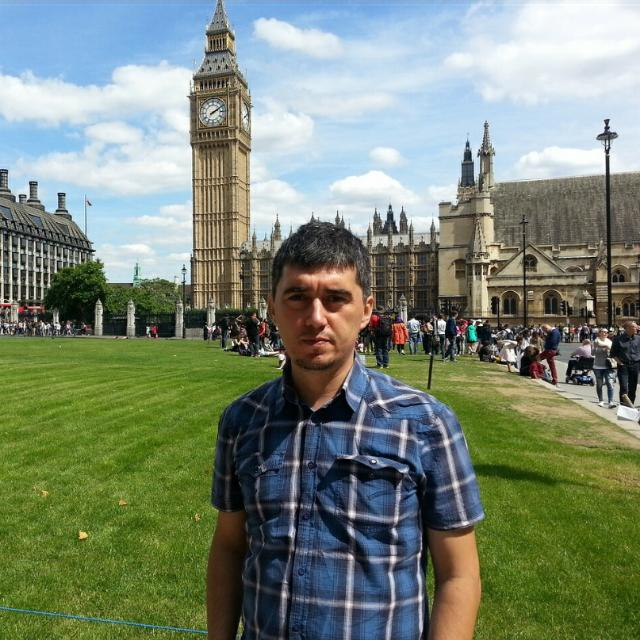

Dr. Öğr. Üyesi | Bilgisayar Mühendisliği | Sinop Üniversitesi
Buraya kendinizle ilgili kısa bir biyografi yazabilirsiniz. Akademik geçmişiniz, araştırma ilgi alanlarınız ve kariyer hedefleriniz hakkında bilgi verebilirsiniz. Örneğin: "Lisans derecemi [Üniversite Adı] bölümünden aldım. Yüksek lisans ve doktora çalışmalarımı [Alan] üzerine [Diğer Üniversite] bünyesinde tamamladım. Şu anda Sinop Üniversitesi Mühendislik ve Mimarlık Fakültesi'nde görev yapmaktayım.
Yavuz Ünal, Muzaffer Bolat, Muhammet Nuri Dudak. (2024). "Examining the Performance of a Deep Learning Model Utilizing Yolov8 for Vehicle Make and Model Classification". Journal of Engineering Technology and Applied Sciences, 9(2) 2017 : 131-143. [PDF] | [Proje Sayfası]
Burada devam eden veya tamamlanmış projeleriniz hakkında daha detaylı bilgi verebilirsiniz.
Araştırmalarım sırasında ürettiğim veya derlediğim kamuya açık veri setlerini aşağıda bulabilirsiniz. Bu veri setlerini atıf yaparak çalışmalarınızda kullanabilirsiniz.
Örnek dataset, Örnek dataset, Örnek dataset, Örnek dataset, Örnek dataset, Örnek dataset, Örnek dataset. Veri seti, [ilgili makaleniz veya projeniz] kapsamında toplanmıştır.
Format: CSV, JSON Boyut: 25 MB
İndir DokümantasyonÖrnek dataset, Örnek dataset, Örnek dataset, Örnek dataset, Örnek dataset, Örnek dataset, Örnek dataset.
Format: PNG Boyut: 500 MB
İndir (Zenodo) GitHub SayfasıGünlük görevlerinizi takip etmek ve odak sürenizi yönetmek için bu küçük aracı kullanabilirsiniz. Görevler tarayıcınızda saklandığı için sayfayı kapatsanız bile kaybolmaz.
E-posta: yunal@sinop.edu.tr
Ofis: dahili 4359, Sinop Üniversitesi Mühendislik ve Mimarlık Fakültesi Binası Kat2, Sinop Üniversitesi Kuzey Kampüsü
Akademik Profiller: Google Scholar | Orcid | LinkedIn | ResearchGate